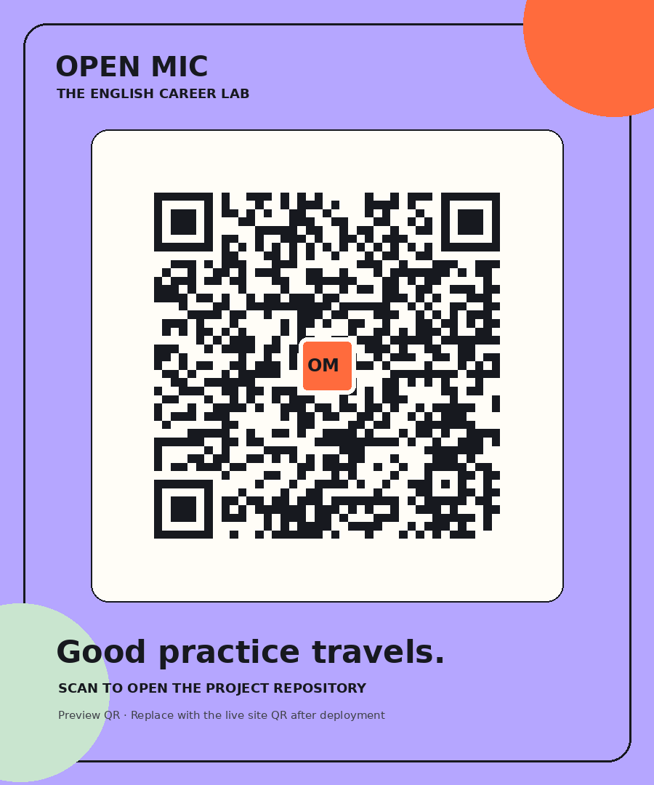

"Hey Marc,
Just wanted to touch base real quick regarding the seed term sheet. We were kind of thinking maybe the valuation cap was a bit too low for us given that we are working super hard on this model. Can we chat tomorrow if you have some free time?
Thanks a ton,
Alex"
Kanakia International School Mira Road
The Sovereign Voice:
How English Mastery Commands High-Value Careers
Beyond conversational fluency: Explore how linguistic cadence, syntactical authority, and rhetorical command drive multimillion-rupee careers across international film, aviation, gaming, and global jurisprudence.
payments
₹18L - ₹1.4Cr+
Global Compensation Range
workspace_premium
16+ High-Impact
Sovereign Disciplines
neurology
5-Tier Adaptive
AI Latency Architecture
domain
Career Architecture Matrix
High-Stakes Disciplines Built on Articulation
Fluency is no longer remedial. In high-value international economies, vocal authority and syntactic precision dictate compensation tier and room command.
Entertainment & Media
₹12L - ₹65L+
Screenwriter / OTT Scriptwriter
Dialogue cadence, subtext mastery & international pitch rooms for global streaming platforms like Netflix & HBO.
Top Academies:
FTII / SRFTI / NYU Tisch
Exam Pathways:
JET / Creative Portfolio / SAT
key
The Leverage: Subtext architecture, dramatic tension, and pitching to US/UK showrunners.
Writing & Narrative
₹15L - ₹80L+
Narrative Designer & Game Writer
World-building lore, branching dialogue trees & interactive rhetoric for AAA studios and transmedia universes.
Top Academies:
DigiPen / NID / BITS Pilani
Exam Pathways:
NID DAT / Interactive Portfolios
key
The Leverage: Complex conditional logic phrased in sharp, emotional English dialogue.
Writing & Narrative
₹10L - ₹1Cr+
Novelist & Fiction Author
Syntax rhythm, narrative tension & international literary syndication across London and New York publishing houses.
Top Academies:
Iowa Writers / Ashoka / Columbia
Exam Pathways:
Ashoka AAT / Literary Manuscripts
key
The Leverage: Global cultural currency and licensing IP rights internationally.
Entertainment & Media
₹8L - ₹50L+
Lyricist & Songwriter
Poetic prosody, phonetic rhythm & cross-cultural resonance for international music labels and synchronizations.
Top Academies:
Berklee / KM Music Conservatory
Exam Pathways:
Audition Portfolios / AP Music
key
The Leverage: Linguistic meter, assonance, and cross-border emotional resonance.
Entertainment & Media
₹12L - ₹45L+
Voice Actor & Audiobook Narrator
Vocal coloration, Received Pronunciation (RP) & dialect agility for Audible, BBC audiobooks, and video game characters.
Top Academies:
NSD / Barry John / LAMDA
Exam Pathways:
Acoustic Auditions / Voice Reels
key
The Leverage: Precision articulation, phoneme control, and vocal endurance.
Entertainment & Media
₹9L - ₹35L+
Radio Jockey & Podcast Host
Impromptu articulation, acoustic pacing & charismatic presence commanding syndicated multi-million-listen streams.
Top Academies:
Jamia MCRC / IIMC / London Met
Exam Pathways:
JMI Entrance / Studio Pilots
key
The Leverage: Real-time conversational agility and rapid lexical retrieval.
Writing & Narrative
₹8L - ₹28L+
Dubbing & Subtitle Localizer
Cultural idioms, colloquial nuance & lip-flap synchronization bridging Asian & Western global entertainment pipelines.
Top Academies:
EFLU / JNU / SOAS London
Exam Pathways:
CUET-PG / Translation Portfolios
key
The Leverage: Preserving comedic timing, subtext, and syllabic cadence across languages.
Corporate & Law
₹18L - ₹1.2Cr+
Corporate Lawyer & Arbitrator
Statutory interpretation, precision contract drafting & high-pressure verbal cross-examinations in Geneva and London tribunals.
Top Academies:
NLSIU / Oxford / Harvard Law
Exam Pathways:
CLAT / LSAT / LNAT
key
The Leverage: Single misplaced prepositions swing multi-million-dollar arbitration liabilities.
Tech & Aviation
₹24L - ₹85L+
Commercial Airline Pilot / Captain
Standard ICAO radiotelephony, non-ambiguous situational commands & crisis assertiveness in saturated transatlantic air corridors.
Top Academies:
IGRUA / CAE / Oxford Aviation
Exam Pathways:
DGCA CPL / ICAO English Level 6
key
The Leverage: Absolute acoustic clarity eliminates runway incursions and mid-air risk.
Tech & Aviation
₹20L - ₹95L+
AI Prompt Engineer & NLP Lead
Semantic ambiguity resolution, few-shot synthetic reasoning & high-parameter alignment steering generative frontier models.
Top Academies:
IIT Bombay / Stanford / CMU
Exam Pathways:
JEE Advanced / GRE / GitHub Research
key
The Leverage: Precise linguistic constraints steer billion-dollar autonomous compute fleets.
equalizer
Real-Time Phonetic Analysis
The Verbum AI Speech Lab
Simulate high-stakes acoustic conditions. Train rhythm, cadential variation, and lexical authority with real-time waveform telemetry.
Selected Script Protocol
Hollywood Pitch: Sci-Fi Pilot
"Ladies and gentlemen of the network room: The series begins in 2088 inside orbital salvage bay nine. What appears to be an abandoned cryo-vessel is essentially carrying the sole uncorrupted neural seed of humanity. We are not selling a space opera; we are selling the final legal trial of biological consciousness."
Ready for acoustic input. Press 'Record Voice Sample'.
analytics Acoustic Telemetry
LIVE ENGINE
Fluency Index
94 / 100
Filler Words Flagged
1 detected: "essentially"
1
Speech Rate (WPM)
138 WPM
Lexical Density (Advanced Vocabulary)
88%
Phonetic Articulation
98.2% Received Clear
forum
High-Pressure Dialogue Sandbox
Conversational Roleplay Matrix
Test real-time diplomatic de-escalation, rapid venture capital persuasion, and aviation emergency assertiveness against institutional AI personas.
Select Simulation Scenario
Tech Founder Seed Pitch
rocket_launch
Skeptical Silicon Valley partner interrogating your unit economics & moat.
Hostile Boardroom Stakeholder
gavel
Interrogating a sovereign compliance breach during transnational merger.
Anxious International Passenger
flight_takeoff
Mid-air turbulence crisis de-escalation using authoritative reassurance.
Marc Andreessen Protocol (Venture Partner)
Strict tone: Expects tight narrative structure without fluff.
smart_toy
"We've reviewed your slide on synthetic language telemetry. Every founder uses the word 'revolutionary'. Exactly what linguistic moat protects your model against frontier open-weights when deployed in cross-border arbitration?"
record_voice_over
Acoustic Gold Standards
Master Orator & Received Pronunciation Benchmark
Study the cadence, vowel placement, and rhythmic suspension of the world's most captivating public speakers. Contrast your voiceprint against timeless standards.
Naturalist & Broadcaster
112 WPM
Sir David Attenborough
Reverent pauses, breath modulation & dramatic sibilance creating universal intimacy.
Suspended Wonder
Statesman & Nobel Laureate
124 WPM
Winston Churchill
Alliterative heavy beats, Anglo-Saxon monosyllables & martial rhetorical climaxes.
Sovereign Defiance
Classical Stage Dame
130 WPM
Dame Maggie Smith
Dry ironic inflection, razor-sharp dental stops & supreme Received Pronunciation (RP).
Aristocratic Wit
Polemicist & Essayist
148 WPM
Christopher Hitchens
Uninterrupted periodic syntax, spontaneous Latinate clauses & combative dialectic speed.
Dialectical Precision
Diplomat & Parliamentarian
142 WPM
Dr. Shashi Tharoor
Exuberant sesquipedalian lexicon, mellifluous Indian-RP hybrid cadence & diplomatic panache.
Lexical Flourish
Comedic Satirist & Orator
126 WPM
Rowan Atkinson
Hyper-articulated plosives (P, B, T, K), theatrical timing & clinical comic delivery.
Plosive Mastery
Contrast Your Audio Stream Against the Masters
Upload a short recording (under 4MB) or paste your verbatim transcript to calculate your lexical rhythm similarity vector.
cloud_upload
Upload Voice Sample (.mp3, .wav under 4MB)
Processed transiently in RAM. Strict privacy protocol.
Acoustic resonance calculated: 81.4% match to Received Pronunciation standard. Minimal glottal stops detected.
Passed Level 6 ICAO/BBC Metric
alt_route
Strategic Trajectory Planner
Class-to-Career Strategic Roadmap
Map foundational linguistic milestones directly to international universities and institutional peak compensation.
1
Phase 1: Vocabulary & Syntax
Legal Latinate Lexicon
Master 1,200 jurisdictional Latin roots, statutory disambiguation, and active analytical parsing.
2
Phase 2: Standardized Testing
CLAT / LNAT Mastery
Target 99.8th percentile in reading comprehension and critical logic under strict timing constraints.
3
Phase 3: University Specialization
NLSIU / Oxford BCL
Premier moot court representation, international maritime law briefs, and journal publication.
4
Phase 4: Sovereign Career
International Partner
Command ₹1.2Cr+ partner retainer presiding over transnational commercial disputes in London & Singapore.
psychology
Executive Polish Challenges
Precision Drills: Micro-Refactoring
Instantaneous executive transformation: Elevate colloquial drafts into razor-sharp institutional memorandums.
mark_email_read
Drill: Executive Email Refactor
Click to identify weak prose
Subject: Hey, about the funding contract we spoke about earlier...
verified
Institutional C-Suite Version
"Dear Marc,
Following our term sheet review, our advisory board has assessed the initial pre-money valuation against our synthetic model's validated 4x retention. We request aligning the capital cap at ₹35Cr to mirror our Q3 enterprise pipeline.
I welcome a brief 10-minute briefing tomorrow at 14:00 UTC.
Respectfully,
Alexander Vance"
Following our term sheet review, our advisory board has assessed the initial pre-money valuation against our synthetic model's validated 4x retention. We request aligning the capital cap at ₹35Cr to mirror our Q3 enterprise pipeline.
I welcome a brief 10-minute briefing tomorrow at 14:00 UTC.
Respectfully,
Alexander Vance"
Eliminates 3 passive hedges & 2 conversational diminutives.
auto_stories
Institutional Lexicon
Daily C-Suite Entry
Perspicacious
/ˌpɜː.spɪˈkeɪ.ʃəs/Adjective • Latin perspicax (sharp-sighted)
Definition:
Having a ready insight into and understanding of complex sovereign or financial affairs.
Boardroom Application:
"The general counsel made a perspicacious intervention, identifying the ambiguous indemnity loophole before contract execution."
Tier-3 Executive Lexicon
leaderboard
Articulation Telemetry
Consortium Speech Leaderboard
Anonymized articulation benchmarking measuring cadence stability, lexical density, and zero-filler eloquence across secondary cohorts.
| Rank | Delegate Alias | Cohort | Specialized Discipline | Articulation Score | Status |
|---|---|---|---|---|---|
| 01 | AV Delegate Orion-9 | Class 12 | International Arbitration | 98.4 / 100 | Exemplary |
| 02 | KS Delegate Zephyr-4 | Class 11 | Screenplay & OTT Pitch | 97.1 / 100 | Exemplary |
| 03 | MR Delegate Callisto-7 | Class 10 | Aviation Radiotelephony | 95.8 / 100 | Verified |
| 04 | TL Delegate Aurora-1 | Class 12 | Transnational Diplomacy | 94.9 / 100 | Verified |
verified_user
ISO / Zero-Log Enforced
Transient Audio Governance & Data Protection
All voice data processed transiently in compliance with strict privacy protocols. No audio is stored permanently.
devices
Direct Mobile Stall Gateway
Experience Verbum Premier on Personal Devices
Scan to initiate instantaneous microphone calibration, acoustic telemetry benchmark tests, and personalized career roadmaps directly on your smartphone.
verified
Ultra-low latency web app
